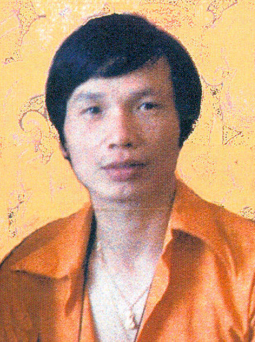
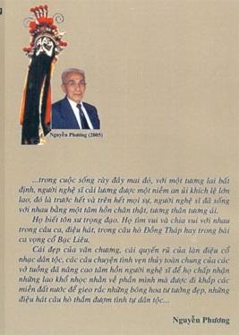

Tôi chỉ là một ký giả kịch ảnh tân nhạc tài tử, tuổi nghề bắt đầu từ năm 1971 cho tới năm 1973. Nhưng từ 11 tuổi, tôi đã theo dõi sinh hoạt của giới nghệ sĩ sân khấu, tân nhạc, và nhất là điện ảnh thuộc cây nhà lá vườn rồi. Cho nên khi còn đeo đuổi việc học hành, mỗi ngày tôi có dịp đến phòng Thông Tin tỉnh nhà (tỉnh Vĩnh Long) theo dõi trang kịch trường, tân nhạc đăng trên hàng chục tờ nhật báo để bồi bổ kiến thức của mình. Và khi bước vào đời lính, nhờ làm việc trong ban ThôngTin Báo Chí, thuộc Bộ Tư Lệnh Quân Đoàn III & Quân Khu 3, tôi cũng được tiếp tục theo dõi sinh hoạt các bộ môn trình diễn trên sân khấu đăng trên hằng chục tờ nhật báo.

Ngành ca kịch cải lương đã thu hút tâm hồn tôi vào lứa tuổi hoa niên, kéo lôi giấc mơ hoa mộng ảo của tôi trải dài hơn nửa thế kỷ. Và cho mãi tới nay, niềm say mê ngưỡng mộ của tôi đối với bộ môn nghệ thuật trình diễn ấy vẫn còn chưa phai nhạt lu mờ.
Dĩ nhiên tôi vẫn biết soạn giả Nguyễn Phương.
Nguyễn Phương là một soạn giả cùng một thế hệ với cặp soạn giả Hà Triều & Hoa Phượng, cặp soạn giả Thiếu Linh & Thành Phát, cặp soạn giả Bạch Diệp & Mình Nguyên, soạn giả Kiên Giang Hà Huy Hà, soạn giả Mộc Linh, soạn giả Lê Khanh, soạn giả Thu An, soạn giả Quy Sắc, soạn giả Điêu Huyền… Lúc đó những soạn giả nổi danh từ thuở tiền chiến như Năm Châu, Năm Nở, Tư Trang, Giáo Út, Duy Lân… đã thấm mệt. Lớp soạn giả Vạn Lý, Viễn Châu, Vân Sinh, Trần văn May, Ba Khuê, Mộng Vân tuy vẫn còn phong độ, nhưng trừ hai anh Vạn Lý và Viễn Châu ra, tất cả lại hình như hơi thiếu thiếu cái không khí mới mẻ, thấm nhuần chất văn chương và thần trí sáng tạo khi họ soạn bất cứ vở tuồng nào. Câu đối thoại của các nhân vật không bày tỏ một quan niệm sống; chúng đơn giản đến độ trơn tuột. Cho nên Nguyễn Phương với lớp soạn giả cùng thế hệ và cùng trang lứa với anh có thể đem lại cho sân khấu cải lương đôi chút sinh khí ở những câu đối thoại rất luyện đạt tình người, ở cách dàn dựng diễn biến và sắp xếp tình tiết công phu hơn.
Ở đây, tôi không cần phải nói về sự nghiệp soạn tuồng và cái tuyệt đỉnh danh vọng của Nguyễn Phương trong giới ca kịch cải lương nói chung, trong giới soạn tuồng nói riêng. Từ năm 1948, anh lao vào cuộc lưu diễn qua các đoàn ca kịch Ánh Sáng, Tiếng Chuông, Việt Kịch Năm Châu cho tới ngày miền Nam Việt Nam bị Cộng Sản cưỡng chiếm thì cũng đã được một phần tư thế kỷ rồi. Ai trót mê ca kịch cải lương mà không biết anh? Đã vậy anh còn viết kịch bản (scénario) cho nhiều cuốn phim hài hước nổi danh. Anh là một nghệ sĩ lớn, dù tôi có tán mỹ ngợi ca anh cũng bằng thừa.
Ở đây, tôi xin đề cập tới hai quyển nửa biên khảo nửa hồi ký của anh là “Ngũ Đại Gia Của Sân Khấu Cải Lương” và “Buồn Vui Đời Nghệ Sĩ”. Anh không có ý định viết về lịch sử của ngành ca kịch cải lương. Anh chỉ viết những biến cố trong giới ca kịch mà anh đã trải qua, những nhân vật trong giới cải lương mà anh tiếp xúc. Đôi lúc anh cũng xen vào đó những điều mà bạn bè anh kể lại, song ít thôi. Thế có nghĩa là anh viết sách bằng nhiều kinh nghiệm sống thực chứ không thuần túy bằng tài liệu. Tài liệu thì khô khan, còn kinh nghiệm sống thực mới tươi rói, mới sống động, dễ lôi cuốn độc giả từ trang đầu tới trang cuối quyển sách.
Đọc quyển “Buồn Vui Đời Nghệ Sĩ”, tôi bàng hoàng khi nghe Nguyễn Phương nhắc lại các nghệ sĩ Thanh Cao, Tuấn Sĩ, Văn Sa, Kim Anh, Ngọc An, Nguyệt Yến…
Làm sao chúng ta lại quên được Kim Anh hát 20 câu Vọng Cổ trong cặp dĩa “Phàn Lê Huê” của hãng Asia bằng giọng thổ khao khao trầm thống?
Làm sao chúng ta lại quên được Ngọc An với dáng dấp cao sang và đẹp sáng mát như vầng trăng rằm qua các đoàn Tiếng Chuông, Hương Hoa, Ngọc An & Bích Sơn, Thanh Hương & Hùng Minh?
Làm sao chúng ta quên mất Nguyệt Yến trong vở tuồng “Nữ Thần Trong Động Lửa” và là đào chánh của gánh Phát Thanh?
Làm sao chúng ta quên được nghệ sĩ Văn Sa, kép nhì rất hùng dũng bên cạnh kép chánh tao nhã Năm Phồi trong gánh Phát Thanh?
Ôi, nếu không có Nguyễn Phương thì họ sẽ lặn sâu trong niềm quên lãng tận dưới đáy tiềm thức của lớp khán giả từ lục tuần trở lên, trong đó có tôi đây.
Nguyễn Phương không phải là nhà kể chuyện (chroniqueur) thuần túy. Chúng ta có thể cười phơi phới qua các giai thoại về cuộc đời về nghề nghiệp của Tám Vân, Trường Xuân, Thanh Việt, Hùng Cường, Hồng Nga cùng ông bầu Cang, ông bầu Tám Kiết. Chúng ta còn được nghe anh kể chuyện anh đi coi vợ bị bên đàng gái chê vì họ lầm tưởng anh theo gánh cải lương của danh sĩ Trúc Viên Trương Gia Kỳ Sanh; nghe anh kể quãng thời gian anh theo gánh Ánh Sáng, Tiếng Chuông, Việt Kịch Năm Châu trong thời kỳ chiến tranh Đông Dương giữa Pháp và Việt Minh.
Ở đây, chúng ta mới rõ thân phận của giới cải lương trong thời chiến, họ bị chèn ép, giam giữ, húng hiếp bởi những lãnh chúa dùng tôn giáo để hùng cứ một phương trời, một vùng bao la trên đất nước Nam Kỳ trong thời khói lửa. Chúng ta có thể chạnh niềm trắc ẩn xót xa trước cảnh ngộ của nghệ sĩ sân khấu sau cuộc đổi đời qua chương “Nữ Nghệ Sĩ Diệu Hiền Trong Biển Lửa”‘ và qua chương “Cuộc Sống Sau Bức Màn Nhung”‘. Thế có nghĩa là Nguyễn Phương đâu phải bắt chúng ta nghe anh kể những chuyện suông đuột và rỗng tuếch để cười sặc sụa rồi lòng rổn rang, trí óc bình thản. Anh chọc cho chúng ta cười để rồi chúng ta ray rứt trước bao cảnh ngộ thương tâm, để chúng ta suy nghĩ về cuộc đời dâu bể, thế sự vô thường. Anh bông phèo giễu cợt qua lối kể chuyện rất điềm đạm, không tía lia hời hợt, nhưng câu chuyện do anh kể vẫn mặn nồng. Chúng ta vẫn được anh chỉ vẽ qua các tập tuồng của các diễn viên hát bội, của các diễn viên cải lương. Anh còn chú trọng tới phần kiến thức nghề nghiệp để độc giả lãnh hội nhiều điều bổ ích về ca kịch cải lương, một bộ môn nghệ thuật cao quý của dân tộc. Do đó chúng ta biết tại sao nghệ sĩ Tám Danh thành công qua vai Hà Công Yên nghiện ngập trong vở “Tứ Đổ Tường”, vì sao Quái kiệt Ba Vân thành công trong vai anh chàng Phê điên loạn trong vở “Người Điên Khi Biết Yêu”. Đó chẳng qua là ông Tám Danh phải đến tiệm hút mà thời Pháp thuộc gọi là công quản nha phiến (R.O/ Regis d’Opium) và ông Ba Vân đến dưỡng trí viện Biên Hòa, kẻ quan sát bợm ghiền, người học lóm cử chỉ và thần sắc của người điên. Rồi qua chương “Nghệ Sĩ Phượng Mai”, chúng ta mới rõ vì sao nữ nghệ sĩ này thành công trên sân khấu Hồ Quảng và trong phạm vi hát tân nhạc. Đó có phải chăng ngoài năng khiếu thiên bẩm còn có tấm lòng tươi son bền sắt với nghề nghiệp, sự cầu tiến và sự tinh luyện tài năng của mình không nhàm mỏi?
Và còn nghệ sĩ Văn Ngà nữa chớ. Anh là kép phụ đòan Thanh Minh Thanh Nga. Nhưng mà, tuy là kép phụ nhưng cùng với Minh Điển, Chí Hiếu, Vinh Sang nếu anh không là nghệ sĩ lớn thì cũng là nghệ sĩ tài nghệ điêu luyện không kém các kép phụ bên gánh Việt Kịch Năm Châu như Ba Sanh, Hoàng Kinh, Văn Lắm (nam), Hai Nữ, Kim Đặng, Tố Nữ (nữ). Văn Ngà vốn là dân Bắc Ninh, cách phát âm trong giọng nói anh phảng phất cách phát âm giọng Bắc Ninh. Anh theo gánh miền Nam, hát cải lương miền Nam nên anh muốn cách phát âm của anh phải đặc sệt cách phát âm của miền Nam. Soạn giả Nguyễn Phương bắt anh đọc nhiều lần bài vè “Gái Lỡ Thời” bằng lối phát âm miền Nam cho tới thuần thục nhu nhuyễn mới thôi. Và nhờ đó, Văn Ngà bỏ được cách phát âm miền Bắc khi đóng tuồng trên sân khấu.
Ở chương “Người Trồng Cây Si Gia Long” nhắc lại thưở Nguyễn Phương si tình cô nữ sinh trường Gia Long. Cuộc tình chẳng ra cái ra nước gì cả. Sau đó, anh theo cộng tác các gánh hát bị các cô đào đặt cho cái hỗn danh Si Gia Long.
Rồi một hôm, đoàn Tiếng Chuông mà anh đang cộng tác đến điễn ở Cần Giờ. Ông Chấp sự trong Hội Đồng Xã vốn không rành truyện Tàu nên muốn đoàn diễn tuồng “Gia Long Tẩu Quốc”. Nghe nói trong gánh có chàng Si Gia Long nên ông nhờ chàng soạn tuồng có cái tựa và cái chủ đề nầy. Ông Ách Một, trưởng đồn lính bạc-ti-dăng cũng đốc xúi cây si như vậy. Nhưng…“Dạ, mang tiếng si Gia Long mà hỏng biết gì về lịch sử Gia Long hết, cái nầy người ta nghe người ta cười tôi. Còn cái tuồng mà quan lớn vẽ ra đó, dạ khó lắm. Tuồng Tàu, tuồng Tây mình có viết sai thì dân coi hát cũng bỏ qua cho, sai là sai cái sử của thằng Tây, thằng Tàu không quan trọng gì tới người Việt mình. Còn như sử Việt Nam mà mình viết sai thì a… thì…Dạ bẩm quan, kỳ nầy về Saigon, tôi nhứt định sẽ nghiên cứu sử Việt Nam, tôi sẽ viết những tuồng sử Việt Nam cho đàng hoàng. Còn kỳ nầy, thì xin quan tha cho.”
Ông Chấp sự cười hề hà: “Thôi, thử bụng mấy chú thôi! Được rồi. Chuyện cả ngàn năm của người Tàu, mấy chú rành ông này mặt mày ra sao, tánh tình như thế nào, chuyện tình yêu gì của họ, mấy chú rành rẽ quá. Vậy thì mấy chú cũng nên rán mà hiểu chút đỉnh lịch sử của nước mình. Dân mình biết rành chuyện Tàu vì mấy chú hát tuồng Tàu. Nếu mấy chú hát tuồng sử Việt thì dân mình cũng hiểu chuyện sử của mình. Phải vậy không? “.
Thật là một bài học chẳng những thấm thía cho tác giả mà còn cho các văn nghệ sĩ của các bộ môn nghệ thuật sáng tác khác.
Ở chương “Hát Chầu Nhân Lễ Hội Kỳ Yên”‘, Nguyễn Phương gây một cái “choc” mạnh vào ấn tượng người đọc. Chuyện kể: vào dịp Tết Canh Thìn (năm 2000), tác giả cùng anh Đinh Bằng Phi, học giả môn hát bội ra cùng nhóm nghệ sĩ ra Vũng Tàu để xem hát bội vào dịp Lễ Hội Kỳ Yên. Ông Hai Chấp sự mà dân địa phương gọi là ông Hai Điểm giữ phần cầm chầu. Ông đề nghị với Đinh học giả nên bỏ lớp Tôn Vương trong tuồng “San Hậu”. Lý do của ông như sau:
…Hồi xưa, tôi theo nghiệp Tổ, tôi cũng nghĩ là sân khấu và cuộc đời giống nhau. Kẻ gian ác tham lam, có lúc đắc thời nhưng tàn cuộc thì bao giờ cũng bị quả báo. Gian thần soán ngôi đoạt vị thì thế nào cũng bị tướng trung và minh quân hồi trào phục nghiệp, bắt đem chém đầu hay xử lăng trì. Rồi thì làm lễ Tôn Vương phong soái. Đó, hai anh nhìn ra biển mà coi, sóng trắng xóa tung tăng xô nhau vô tư đùa giỡn, nhưng dưới lòng biển, ngoài khơi ngàn trùng xa cách đó, có cả triệu người vùi thây mất xác… Nếu linh hồn oan ức của họ còn lởn vởn đâu đó thì nhứt định là họ mong có ngày quân tham ác, kẻ cướp ngôi đoạt vị phải bị trừng trị, rồi thì có lễ Tôn Vương cho người dân sống thoải mái Tự Do hơn. Vậy mà 25 năm qua rồi, chưa có lễ Tôn Vương… mà cũng chẳng biết bao giờ có lễ Tôn Vương thật sự. Vậy tôi muốn xuất hát ‘San Hậu” thứ ba không có lễ Tôn Vương để cho thánh thần và dân tới coi hát nhớ là chưa có lễ Tôn Vương, bọn gian thần Tạ Thiên Lăng, Tạ Ôn Đình vẫn còn đó…
Hôm tuồng trình diễn tại đình Thắng Tam, ông Hai Điểm cầm chầu. Tới lớp Tôn Vương ông đánh dằn mạnh vào trống, rồi quăng dùi trống và bỏ đi. Hôm sau, ông chết vì chứng thổ huyết trầm trọng. Xem tới chương này, đố ai mà không bần thần suy nghĩ? Và cảm giác sần sượng cứ bám riết vào tim óc chúng ta chắc chắn cũng khá lâu, có phải?
Chương lảng vảng bóng u linh là chương “Chuyện Dị Đoan Trong Giới Nghệ Sĩ Cải Lương”‘. Chuyện kể rằng: hai bức tượng phụ nữ Pháp trên nóc rạp Thủ Dầu Một bị ma nữ dựa vào để khuấy phá nghệ sĩ trong gánh hát Việt Kịch Năm Châu vào lúc họ ngủ. Chúng còn cản trở khán giả không đến xem đông đúc tuồng “Tây Thi Gái Nước Việt” vốn là tuồng hốt bạc của đoàn… Ông Tám Kiết phải lấy sơn đen bôi lên tượng thì khán giả tới ùn ùn mua vé xem tuồng “Tây Thi Gái Nước Việt” được trình diễn lại. Rồi trong thời gian còn trụ diễn ở Thủ Dầu Một, nghệ sĩ và công nhân được yên ổn cho tới ngày họ dọn đi lưu diễn ở địa danh khác. Bút giả nghĩ rằng đây chưa hẳn là chuyện hoang đường. Khoa học huyền bí chưa đủ khả năng giải thích hiện tượng kỳ quái này nên kẻ hồ đồ cho là điều mê tín dị đoan. Nhưng sự thực là đâu, khi nó nằm ngoài vòng hiểu biết của nhân loại? Lại nữa, trong chương “Ngày Xuân Nghệ Sĩ Đi Xem Bói”‘, chúng ta phải tự hỏi vì sao thầy bói quẻ Khổng Minh ở Lăng Ông Bà Chiểu lại đoán trúng vận mệnh tương lai của ba soạn giả Hà Triều, Nguyễn Phương và Kiên Giang Hà Huy Hà không sai một mảy lông sợi tóc? Nếu không dựa vào chuyện thần linh ma quỷ trong cõi âm hồn thì làm sao chúng ta giải thích cho trôi được, hả các bạn?
Chương “Ngậm Ngải Tìm Trầm” là chương tác giả cùng nhóm nghệ sĩ công nhân đoàn Thanh Minh Thanh Nga đi trình diễn ở Ninh Hòa sau cuộc đảo chánh lật đổ chánh thể Đệ nhứt Cộng Hòa. Trong thời gian còn trụ diễn ở đây, đoàn hát nhân một ngày thong thả đi tắm suối nước nóng thì gặp mưa bão. Nguyễn Phương, Kiên Giang Hà Huy Hà, Hà Triều, Phượng và ba nghệ sĩ Chí Hiếu, Văn Ngà, Vinh Sang cùng 4 cô nữ vũ công không về được thành phố đành ngủ đêm trong gian nhà sàn của ông chủ phum. Nửa đêm, trong cơn mưa gió có tiếng hú ghê rợn của ngưòi rừng. Ông phum cho mọi người khách biết đó là người đi tìm trầm hương mà quên ngậm ngải nên bị sơn thần và ma rừng làm mất trí nhớ và tiếng nói nên lạc đường về buôn bản. Đương sự lại ăn nhằm thứ ngải linh mọc xung quanh gốc trầm nên biến thành người rừng. Nghe câu chuyện kể, Hà Triều và Hoa Phượng sanh cảm hứng nên khi về Sài Gòn, cả hai cùng chung soạn tuồng “Mưa Rừng” trong đó có nhân vật điên (trưởng nam ông chủ đồn điền) vì ăn nhằm ngải độc.
Đây là một câu chuyện lý thú không thua chuyện đường rừng của Tchya hoặc của Lan Khai vào thời tiền chiến.
Đọc quyển sách của Nguyễn Phương viết về kỷ niệm quãng đời anh tham gia sinh hoạt của sân khấu, chúng ta có cảm tưởng như đọc văn chương của Sơn Nam. Chúng ta phải suy nghĩ triền miên theo hành trình cây bút của anh. Chúng ta yêu cái cao quý của giới sàn gỗ màn nhung đã đành, chúng ta còn bắt gặp cái thối nát trong thời kỳ nhiễu nhương của đất nước. Có cái khía cạnh tiêu cực của thời cuộc ấy, tác giả mới làm hiển lộ niềm gắn bó của kẻ sống đời gạo chợ nước sông, của kẻ ăn cơm quán ngủ đình hà rầm để đem tất cả tài hoa của mình cống hiến cho khách thưởng ngoạn. Trong giới ca kịch cải lương vẫn có người tốt kẻ xấu. Nhưng Nguyễn Phương chỉ nhìn cái tốt của họ bằng tấm lòng nhân hậu và bằng cặp mắt bao dung. Đối với anh, chỉ có tấm lòng yêu nghệ thuật và sự nghiệp lẫy lừng của họ mới đáng để anh đưa vào tác phẩm của mình. Không bao giờ anh phanh phui chuyện thay vợ đổi chồng hoặc sự tương tranh bất chính và hèn mạt của họ.
Đọc “Buồn Vui Đời Nghệ Sĩ”, chúng ta gặp được nhiều cái để học hỏi: yêu bộ môn ca kịch cải lương vốn là tinh hoa lưu truyền của dân tộc, biết tha thứ những cá tính không đẹp và đời tư đồi trụy của một vài nghệ sĩ để giữ mỹ cảm cho khán giả và khách ái mộ tài năng của họ được nguyên vẹn và tốt đẹp, trước sao sau vậy.
Ông Chấp sự ở Cần Giờ trong chương “Người Si Gia Long” không đáng để chúng ta suy tư về tâm hồn ái quốc rất đơn sơ mộc mạc của những kẻ chất phác ở một địa danh khiêm tốn tại miền duyên hải hay sao? Còn ông Hai Điểm trong chương “Hát Chầu Nhân Lễ Hội Kỳ Yên” không đáng để cho tấm lòng chúng ta nức nở trước một nhân vật ái quốc qua một khía cạnh quá đặc biệt. Nó không biến chương sách này thành một truyện ngắn có giá cao độ để chúng ta xếp vào nền văn chương hải ngoại hay sao?
Cho nên “Buồn Vui Đời Nghệ Sĩ” là một tác phẩm nhuần thấm tình người, tình nước, tình yêu nghệ thuật, ngoài những giai thoại lý thú lấp lánh ánh sáng lạc quan luôn cả những vận sự cười ra nước mắt.
Cổ Nguyệt Đường,
mùa Hè năm 2005
